The lettuce photo dataset that trains the growth-stage AI model, and the sensor and camera data the system records while it runs.
Photos88labelled lettuce photos
Classes3seedling · vegetative · matured
Model input224²JPEG, RGB
Test accuracy86 %5-fold cross-validation
Part A · Plant image dataset
Lettuce growth stages
Each photo sits in a folder named after its growth stage; the folder name is the label. The stage also gives the plant size,
so one model predicts both. The classes are balanced, which keeps the model from favouring one stage.
Stage
Size
Folder
Photos
Share
What it looks like
Seedling
Small
seedling/
30
34 %
A few small leaves, plug or sponge visible
Vegetative
Medium
vegetative/
29
33 %
Open rosette, leaves spreading
Matured
Large
matured/
29
33 %
Full, dense head, ready to harvest
Total
88
100 %
Sample photos (dataset/lettuce_224/)
Seedlingsmall
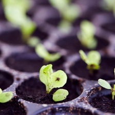
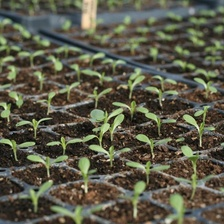
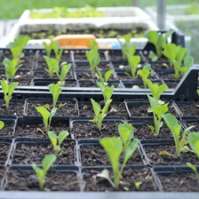
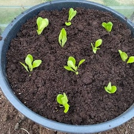
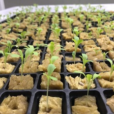
Vegetativemedium
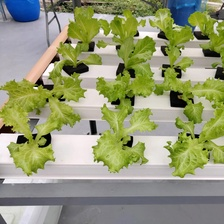
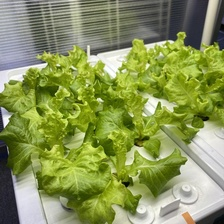
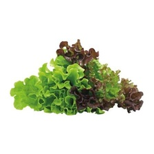
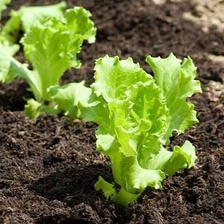
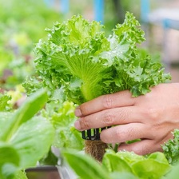
Maturedlarge
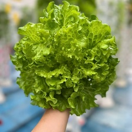
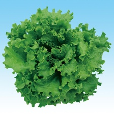
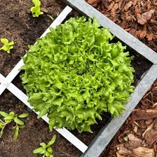
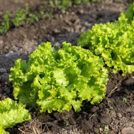
Hydro · 03 Dataset1
Hydro · 03 DatasetPreparation and model results
Part A · continued
From photos to a model
Two versions of the dataset
Folder
Content
dataset/lettuce_growth_stages/
The 88 original photos, untouched. Mixed formats (82 JPEG, 4 AVIF, 2 WEBP) and sizes from 194×259 to 2976×2232 px.
Two photos were removed because the same image had two different labels.
dataset/lettuce_224/
The same 88 photos as 224×224 JPEG (quality 95), ready for training.
1 · CollectPhotos sorted into stage folders
→
2 · CleanRotate upright, drop duplicates with two labels
backend/train/train_stage.py fine-tunes an ImageNet-pretrained MobileNetV3-Small for 30 epochs with augmentation and a class-weighted loss,
on the Raspberry Pi 5 itself (about 40 minutes). It is tested with 5-fold stratified cross-validation: every photo is predicted once by a model that never saw it.
Result (chosen model: classifier)
Model
Test acc
MAE
Always "Small" (baseline)
34 %
0.99
Always "Medium" (baseline)
33 %
0.67
A: Classifier (chosen)
86 %
0.16
B: Regression
76 %
0.24
Confusion matrix (test, 88 photos)
Actual ↓ / Pred →
Seed.
Veg.
Mat.
Recall
Seedling
29
1
0
97 %
Vegetative
3
23
3
79 %
Matured
2
3
24
83 %
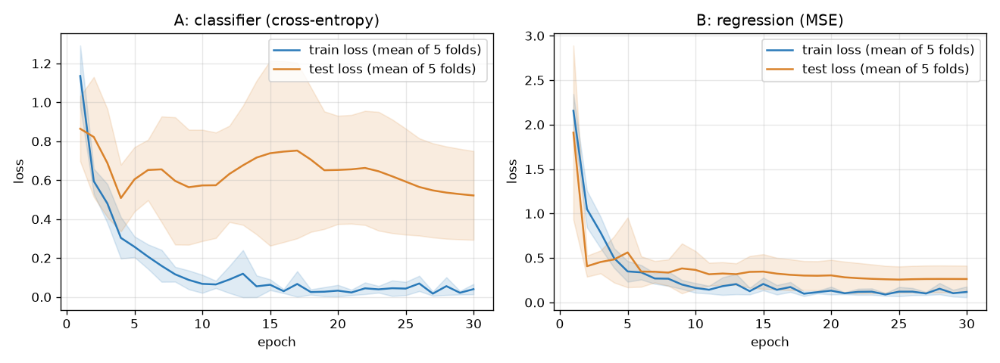
Training curves from backend/models/stage_training.png. Exported model: backend/models/stage.onnx, 6.1 MB, 10 ms per photo on the Pi 5 (ONNX Runtime, CPU).
Hydro · 03 Dataset2
Hydro · 03 DatasetData recorded by the system
Part B · Recorded data
Sensor and camera logs
While running, the Raspberry Pi writes two kinds of data to data/ (kept out of git). They feed the dashboard history and can be opened in Excel or LibreOffice.
A new file starts each time the ESP32 connects (plugged in, Pi reboot or bridge restart). One row every 2 seconds, about 43,200 rows a day.
Booleans are stored as 1 / 0 and a missing value is an empty cell.
Column
Unit
Meaning
log_id, row, time
Log number (counts up per file), row in the file, timestamp
temp, hum
°C, %
Air temperature and humidity (DHT22)
ec, ec_low
mS/cm
Nutrient strength; ec_low = signal below the ADC floor (EC < ~0.6)
ph
pH of the nutrient water
level, level_pct, level_low
cm, %
Water height, level in %, tank-low flag (below 20 %)
dist_cm, ec_mv, po_mv
cm, mV
Raw HC-SR04 distance and raw sensor voltages (for calibration)
pump_a, pump_b
1 / 0
Pump A / Pump B relay state
pump_auto, pump_sample
1 / 0
Auto (EC/pH) mode, sampling pump state
Camera log · data/vision/vision_log.csv
One row every 15 minutes (or when Save photo is pressed), with the photo saved as data/vision/YYYY-MM-DD/HH-MM-SS.jpg.
Column
Unit
Meaning
time, image
Timestamp and the saved photo's path
canopy_pct
%
Share of the photo that is plant (rough size measure)
AI growth stage (or uncertain below 60 %), confidence, size
Next step for the dataset. All 88 training photos come from the internet. Photos saved by the system's own camera are the path to a better model: photos saved by the camera can be labelled and added to dataset/, then the model is retrained with train_stage.py so it learns the real rack view.